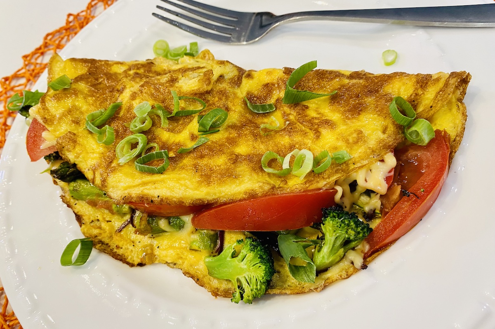
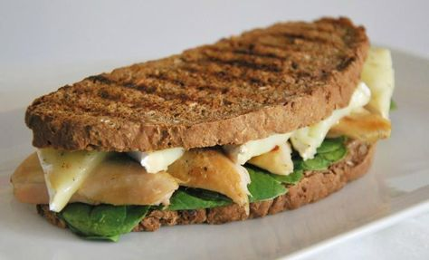

Adelina´s
Inicio
quienes-somos
mapa
contacto

omelettes Vegetariano
2 discos de masa tipo pascualina
200 gramos de espinaca
1/2 cebolla
50 gramos arroz
aceite de maiz
3 huevos frescos
queso rallado/mozzarella
Tarta de espinaca
2 huevos
leche
sal
zucchini
hongo rebanado
2 brocolis
1/4 cebolla morada
2 esparragos
1/2 tomate pequeño
sal y pimienta

sandwich Integral con soja texturizada
4 pimentones
1 cebolla
1/2 taza de alfalfa
1/2 pepino
1 tomate
Palta
pan integral
alioli
2 hojas de lechuga